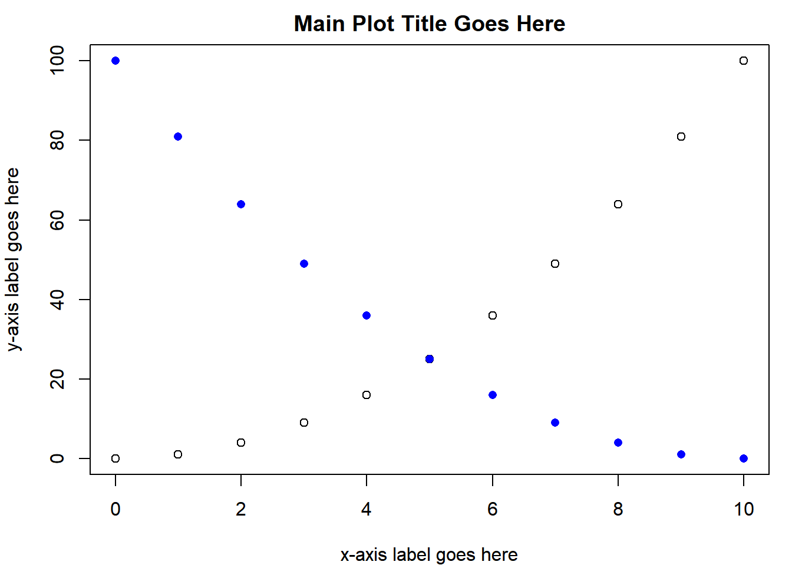
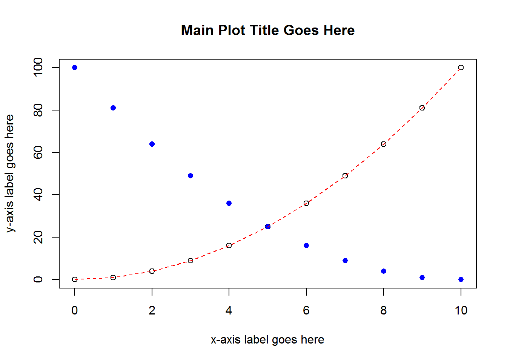
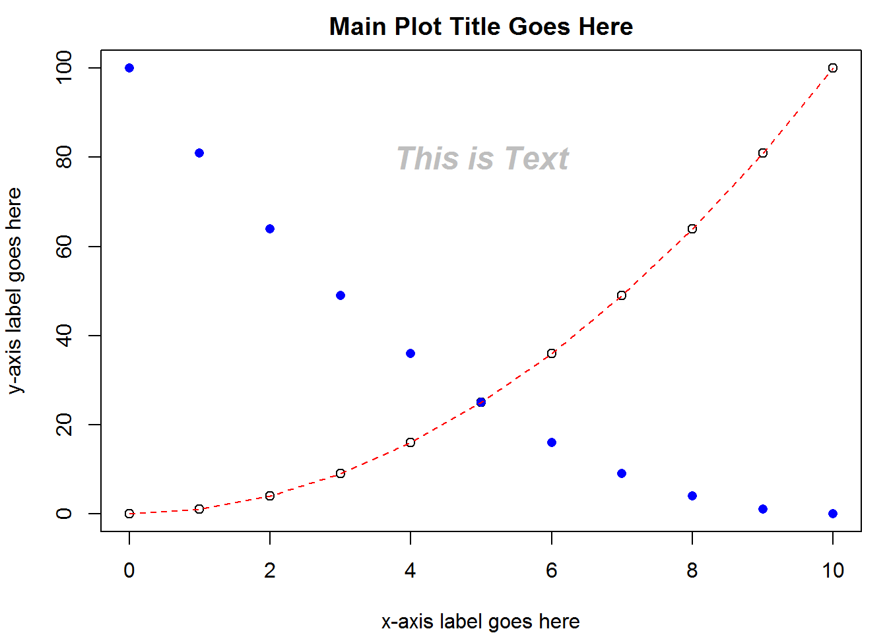
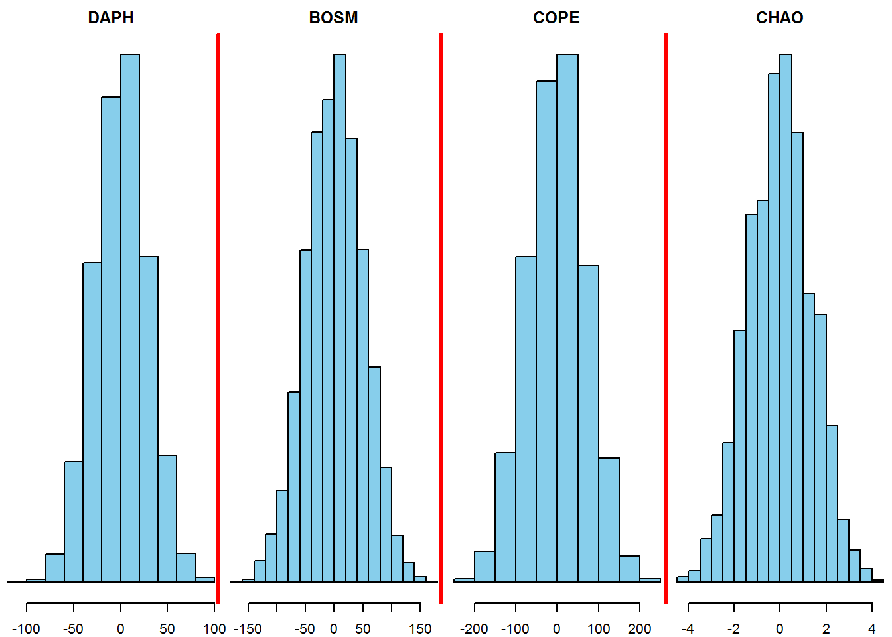
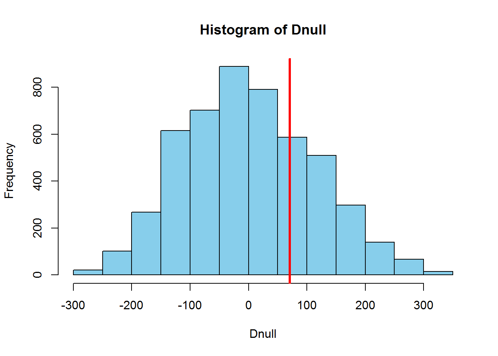
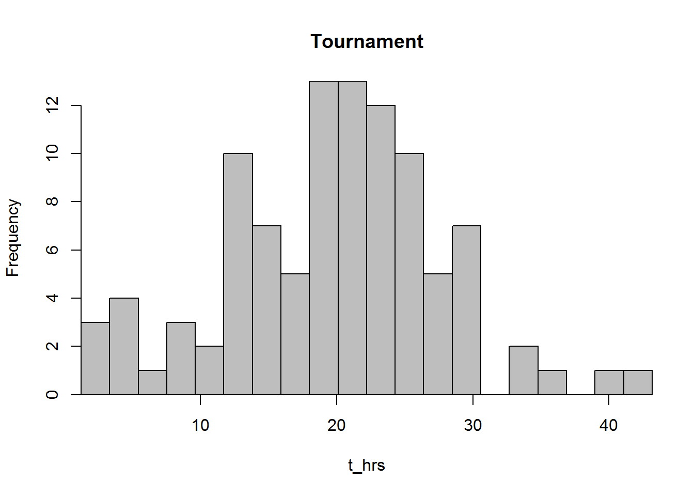
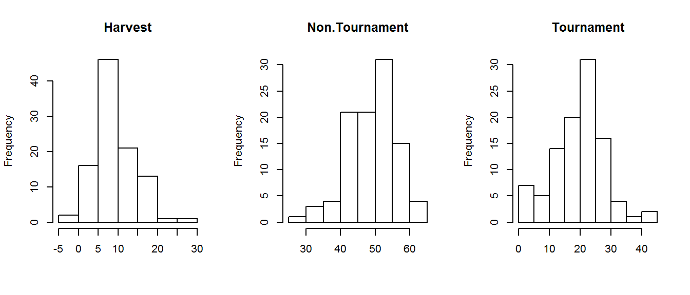

Chapter 2 Base R Plotting Basics
Chapter Overview
In this chapter, you will get familiar with the basics of using R for making plots and figures. You will learn:
- how ot make various plots including:
- scatterplots
- line plots
- bar plots
- box-and-whisker plots
- histograms
- the basics of how to change plot features like the text displayed, the size of points, and the type of points
- the basics of multi-panel plotting
- the basics of the
parfunction - how to save your plot to an external file
R’s base {graphics} plotting package is incredibly versatile, and as you will see, it doesn’t take much to get started making professional-looking graphs. It is worth mentioning that there are other R packages12 for plotting (e.g. {ggplot2} and {lattice}) that have nice features. They can be more complex to learn at first than the base R plotting capabilities and look a bit different.
IMPORTANT NOTE: If you did not attend the sessions corresponding to Chapter 1, you are recommended to walk through the material found in that chapter before proceeding to this material. Also note that if you are confused about a topic, you can use CTRL + F to find previous cases where that topic has been discussed in this book.
Before You Begin
You should create a new directory and R script for your work in this Chapter. Create a new R script called Ch2.R and save it in the directory C:/Users/YOU/Documents/R-Book/Chapter2. Set your working directory to that location. Revisit Sections 1.2 and 1.3 for more details on these steps.
2.1 R Plotting Lingo
Learning some terminology will help you get used to the base R graphics system:
- A high-level plotting function is one that is used to make a new graph. Examples of higher level plotting functions are the general
plot()and thebarplot()functions. When-a high level plotting function is executed, the currently displayed plot (if any) is written over. - A low-level plotting function is one that is used to modify a plot that has already been created. You must already have made a plot using a higher level plotting function before you use lower level plotting functions. Examples include
text(),points(), andlines(). When a low-level plotting function is executed, the output is simply added to an existing plot. - The graphics device is the area that a plot shows up. RStudio has a built in graphics device in its interface (lower right by default in the “Plots” tab), or you can create a new device. R will plot on the active device, which is the most recently created device. There can only be one active device at a time.
Here is an example of a basic R plot:

There are a few components:
- The plotting region: all data information is displayed here.
- The margin: where axis labels, tick marks, and main plot titles are located
- The outer margin: by default, there is no outer margin. You can add one if you want to add text here or make more room around the edges.
You can change just about everything there is about this plot to suit your tastes. Duplicate this plot, but make the x-axis, y-axis, and main titles something other than the placeholders shown here:
# plot dummy data
x = 0:10
y = x^2
plot(x = x, y = y,
xlab = "x-axis label goes here",
ylab = "y-axis label goes here",
main = "Main Plot Title Goes Here")Note that the first two arguments, x and y, specify the coordinates of the points (i.e., the first point is placed at coordinates x[1],y[1]). plot() has tons of arguments (or graphical parameters as the help file found using ?plot or ?par calls them) that change how the plot looks. Note that when you want something displayed verbatim on the plotting device, you must wrap that code in " ", i.e., the arguments xlab, ylab, and main all receive a character vector of length 1 as input.
Table 2.1 shows information on just a handful of them to get you started.
| Arg. | Usage | Description |
|---|---|---|
xlab
|
xlab = 'X-AXIS'
|
changes the x-axis label text |
ylab
|
ylab = 'Y-AXIS'
|
changes the y-axis label text |
main
|
main = 'TITLE'
|
changes the main title text |
cex
|
cex = 1.5
|
changes the size of symbols in the plotting region13 |
pch
|
pch = 17
|
changes the symbol type14 |
xlim
|
xlim = range(x)
|
changes the endpoints (limits) of the x-axis15 |
ylim
|
ylim = c(0,1)
|
same as xlim, but for the y-axis
|
type
|
type = 'l'
|
changes the way points are connected by lines16 |
lty
|
lty = 2
|
changes the line type17 |
lwd
|
lwd = 2
|
changes the line width18 |
col
|
col = 'blue'
|
changes the color of plotted objects19 |
You are advised to try at least some of the arguments in Table 2.1 out for yourself with your plot(x, y) code from above - notice how every time you run plot(), a whole new plot is created, not just the thing you changed. There are definitely other options: check out ?plot or ?par for more details.
2.2 Lower Level Plotting Functions
Now that you have a base plot designed to your liking, you might want to add some additional “layers” to it to represent more data or other kind of information like an additional label or text. Add some more points to your plot by putting this line right beneath your plot(x,y) code and run just the points() line (make sure your device is showing a plot first):
# rev() reverses a vector: so the old x[1] is x[11] now
points(x = rev(x), y = y, col = "blue", pch = 16)
Here, points() acted like a low-level plotting function because it added points to a plot you already made. Many of the arguments shown in Table 2.1 can be used in both high-level and low-level plotting functions (notice how col and pch were used in points()). Just like points(), there is also lines():
lines(x = x, y = x, lty = 2, col = "red")
You can add text to the plotting region:
text(x = 5, y = 80, "This is Text", cex = 1.5, col = "grey", font = 4)
The text is centered on the coordinates you provide. You can also provide vectors of coordinates and text to write different things at once.
The easiest way to add a straight line to a plot is with abline(). By default it takes two arguments: a and b which are the intercept and slope, respectively, e.g., abline(c(0,1)) will draw a 1:1 line. You can also do abline(h = 5) to draw a horizontal line at 5 or abline(v = 5) to draw a vertical line at 5.
You can see that the text is centered on the coordinates x = 5 and y = 80 using abline():
abline(h = 80, col = "grey")
abline(v = 5, col = "grey")
If you accidentally add a plot element that you don’t want using a low-level plotting function, the only way to remove it is by re-running the high-level plotting function to start a new plot and adding only the objects you want. Try removing the “This is Text” text and the straight lines you drew with abline() from the plot displayed in your device.
2.3 Other High-Level Plotting Functions
You have just seen the basics of making two dimensional scatter plots and line plots. You will now explore other types of graphs you can make.
2.3.1 The Bar Graph
Another very common graph is a bar graph. R has a bargraph() function, and again, it has lots of arguments. Here you will just make two common variations: single bars per group and multiple bars per group. Create a vector and plot it:
x1 = c(2,4,6)
barplot(x1)
Notice that there are no group names on the bars (if x1 had names, there would be). You can add names by using the argument names.arg:
barplot(x1, names.arg = c("a", "b", "c"))Add some more information by including two bars per group. Create another vector and combine it with the old data:
x2 = c(3,5,7)
x3 = rbind(x1, x2)
barplot(x3, names.arg = c("a", "b", "c"), beside = T)
To add multiple bars per group, R needs a matrix like you just made. The columns store the heights of the bars that will be placed together in a group. Including the beside = T argument tells R to plot all groups as different bars as opposed to using a stacked bar graph.
Oftentimes, you will want to add error bars to a bar graph like this. To avoid digressing too much here, creating error bars is covered as a bonus topic (Section 2.11).
2.4 Box-and-Whisker Plots
Box-and-whisker plots are a great way to visualize the spread of your data. All you need to make a box-and-whisker plot is a grouping variable (a factor, revisit Section 1.5 if you don’t remember what these are) and some continuous (i.e., numeric) data for each level of the factor. You will be using the creel.csv data set (see the instructions on acquiring and placing the data files in the appropriate location).
Read the data in and print a summary:
dat = read.csv("../Data/creel.csv")
summary(dat)## fishery hours
## Harvest :100 Min. :-1.150
## Non.Tournament:100 1st Qu.: 9.936
## Tournament :100 Median :20.758
## Mean :26.050
## 3rd Qu.:43.896
## Max. :62.649This data set contains some simulated (i.e., fake) continuous and categorical data that represent 300 anglers who were creel surveyed20. In the data set, there are three categories (levels to the factor fishery) and the continuous variable is how many hours each angler fished this year. If you supply the generic plot() function with a continuous response (y) variable and a categorical predictor (x) variable, it will automatically assume you want to make a box-and-whisker plot:
plot(x = dat$fishery, y = dat$hours)
In the box-and-whisker plot above, the heavy line is the median, the ends of the boxes are the 25th and 75th percentiles and the “whiskers” are the 2.5th and 97.5th percentiles. Any points that are outliers (i.e., fall outside of the whiskers) will be shown as points21.
It is worth introducing a shorthand syntax of typing the same command:
plot(hours ~ fishery, data = dat)Instead of saying plot(x = x.var, y = y.var), this expression says plot(y.var ~ x.var). The ~ reads “as a function of”. By specifying the data argument, you no longer need to indicate where the variables hours and fishery are found. Many R functions have a data argument that works this same way. It is sometimes preferable to plot variables with this syntax because it is often less code and is also the format of R’s statistical equations22.
2.5 Histograms
Another way to show the distribution of a variable is with histograms. These figures show the relative frequencies of observations in different discrete bins. Make a histogram for the hours the surveyed tournament anglers fished this year:
hist(dat$hours[dat$fishery == "Tournament"])
Notice the subset that extracts hours fished for tournament anglers only before plotting.
hist() automatically selects the number of bins based on the range and resolution of the data. You can specify how many evenly-sized bins you want to plot:
# extract the hours for tournament anglers
t_hrs = dat$hours[dat$fishery == "Tournament"]
# create the bin endpoints
nbins = 20
breaks = seq(from = min(t_hrs), to = max(t_hrs), length = nbins + 1)
hist(t_hrs, breaks = breaks, main = "Tournament", col = "grey")
2.6 The par Function
If it bothers you that the axes are “floating”, you can fix this using this command:
par(xaxs = "i", yaxs = "i")
hist(t_hrs, breaks = breaks, main = "Tournament", col = "grey")
Here, you changed the graphical parameters of the graphics device by using the par() function. Once you change the settings in par(), they will remain that way until you start a new device.
The par() function is central to fine-tuning your graphics. Here, the xaxs = "i" and yaxs = "i" arguments essentially removed the buffer between the data and the axes. par() has options to change the size of the margins, add outer margins, change colors, etc. Some of the graphical parameters that can be passed to high- and low-level plotting functions (like those in Table 2.1) can also be passed par(). Check out the help file (?par) to see everything it can do. If you want to start over with fresh par() settings, start a new device.
2.7 New Temporary Devices
If you are using RStudio, then likely all of the plots you have made thus far have shown up in the lower right-hand corner or your RStudio window. You have been using RStudio’s built-in plotting device. If you wish to open a new plotting device (maybe to put it on a separate monitor), you can use the following commands, depending on your operating system:
- Windows Users – just run
windows()to open up a new plotting device. It will become the active device. - Mac Users – similarly, you can run
quartz()to open a new device. - Linux Users – similarly, just run
x11().
2.8 Multi-panel Plots
Sometimes you want to display more than one plot at a time. You can make a multi-panel plot which allows for multiple plotting regions to show up simultaneously within the same plotting device. First, you need to change the layout of the plotting region. The easiest way to set up the device for multi-panel plotting is by using the mfrow argument in the par() function.
Below, the code says “set up the graphical parameters so that there is 1 row and 3 columns of plotting regions within the device”. Every time you make a new plot, it will go in the next available plotting region. Make 3 histograms, each that represents a different sector of the fishery:
par(mfrow = c(1,3))
sapply(levels(dat$fishery), function(f) {
hist(dat$hours[dat$fishery == f], main = f, xlab = "")
})
Here, sapply() applied a user-defined function that plots a histogram for a given fishery type to each of the fishery types separately23, which allowed you to only need to type the hist() code once. There are other ways to make multi-panel plots, however, they are beyond the scope of this introductory material. See ?layout for details. With this function you can change the size of certain plots and make them have different shapes (i.e., some squares, some rectangles, etc.), but it takes some pretty involved (though not impossible, by any means) specification of how you want the device to be split up into regions.
2.9 Legends
Oftentimes you will want to add a legend to plots to help people interpret what it is showing. You can add legends to R plots using the low-level plotting function legend(). Add a legend to the bar plot you made earlier with two groups. First, re-make the plot by running the high-level barplot() function, but change the colors of the bars to be shades of blue and red. Once you have the plot made, add the legend:
barplot(x3, beside = T,
names.arg = c("a", "b", "c"),
col = c("skyblue2", "tomato2"))
legend("topleft", legend = c("Group 1", "Group 2"),
fill = c("skyblue2", "tomato2"))
The box can be removed using the bty = "n" argument and the size can be changed using cex. The position can be specified either with words (like above) or by using x-y coordinates.
Here is a more complex example:
# 1) extract and sort the hours for two fisheries from fewest hours
t_hrs = sort(dat$hours[dat$fishery == "Tournament"])
n_hrs = sort(dat$hours[dat$fishery == "Non.Tournament"])
# 2) make the plot: plot for t_hrs only, but ensure xlim covers both groups
# set the margins:
# 4 lines of margin space on bottom and left,
# 1 on top and right
par(mar = c(4,4,1,1))
plot(x = t_hrs, y = 1:length(t_hrs),
type = "o", lty = 2, xlim = range(c(t_hrs, n_hrs)),
xlab = "Hours Fished/Year", ylab = "Rank within Fishery Samples",
las = 1) # las = 1 says "turn the y-axis tick labels to be horizontal"
# 3) add info for the other fishery
points(x = n_hrs, y = 1:length(n_hrs), type = "o", lty = 1, pch = 16)
# 4) add the legend
legend("topleft", legend = c("Tournament", "Non-Tournament"),
lty = c(2,1), pch = c(1, 16), bty = "n")
Notice that you need to be careful about the order of how you specify which lty and pch settings match up with the elements of the legend argument. In the plot() code, you specified that the lty = 2 but didn’t specify what pch should be (it defaults to 1). So when you put the “Tournament” group first the the legend argument vector, you must be sure to use the corresponding plotting codes. The first element of the lty argument matches up with the first element of legend, and so on. Note the other plotting tricks used in the code above: changing the margins using par(mar) and the rotation of y-axis tick mark labels using las = 1.
2.10 Exporting Plots
There are two main ways to save plots. First is a quick-and-dirty method that saves the plots, but they are not high-resolution and you can’t automate this process. The second method produces cleaner-looking high-resolution plots with code that can be embedded in your script, ensuring the same exact plot will be created each time the code is executed
2.10.1 Click Save
- If your plot is in the RStudio built-in graphics device: Right above the plot, click Export > Save as Image. Change the name, dimensions and file type.
- If your plot is in a plotting device window (opened with
windows()orquartz(): Simply go to File > Save.
All plots will be saved in the working directory by default. You can also just copy the plot to your clipboard (File > Copy to the clipboard > bitmap) and paste it where you want. You should saving one of the plots you made in this Chapter using this approach.
2.10.2 Use a function to place plot in a new file
If you are producing plots for a final report or publication, you want the output to be as clean-looking as possible and you want them to be fully reproducible so when something changes with your data or analysis in review, you can reproduce the same figure with the new results. You can save high-resolution plots through R by using the following steps:
# step 1: Make a pixels per inch object
ppi = 600
# step 2: Call the figure file creation function
png("TestFigure.png", h = 8 * ppi, w = 8 * ppi, res = ppi)
# step 3: Run the plot
# put all of your plotting code here (without windows())
# step 4: Close the device
dev.off()A plot will be saved in your working directory containing the plot made by the code in step 3 above. The ppi object is pixels-per-inch. When you specify h = 8 * ppi, you are saying “make a plot with height equal to 8 inches”. There are similar functions to make PDFs, tiff files, jpegs, etc. You should try saving one of the plots you made in this Chapter using this approach.
2.11 Bonus Topic: Error Bars
Rarely should you ever present estimates without some measure of uncertainty. The most common way for visualizing the uncertainty in an estimate is by using error bars, which can be added to an R plot using the lower-level function arrows(). To use arrows(), you need:
- Vectors of the
xandycoordinates of the lower bound of the error bars - Vectors of the
xandycoordinates of the upper bound of the error bars
The syntax for arrows() is as follows: arrows(x0, y0, x1, y1, ...), where x0 and y0 are the coordinates you are drawing “from” (e.g., lower limits) and the x1 and y1 are the coordinates you are drawing “to” (e.g., upper limits). The ... represents other arguments to change how the error bars look. Calculate the mean of the different fishery sectors (if you don’t remember how tapply() works, revisit Section 1.9) and plot them:
x_bar = tapply(dat$hours, dat$fishery, mean)
barplot(x_bar)
You wish to add error bars that represent 95% confidence intervals on the mean. You can create a 95% confidence interval using this basic formula:
\[\begin{equation} \bar{x} \pm 1.96 * SE(\bar{x}), \tag{2.1} \end{equation}\]where
\[\begin{equation} \bar{x}=\frac{1}{n}\sum_i^n{x_i}, \tag{2.2} \end{equation}\]and
\[\begin{equation} SE(\bar{x})=\frac{\sqrt{\frac{\sum_i^n{(x_i - \bar{x})^2}}{n-1}}}{\sqrt{n}} \tag{2.3} \end{equation}\]Begin by creating a function to calculate the standard error (\(SE(\bar{x})\)):
calc_se = function(x) {
sqrt(sum((x - mean(x))^2)/(length(x)-1))/sqrt(length(x))
}Then calculate the standard errors for each fishery type:
se = tapply(dat$hours, dat$fishery, calc_se)Then calculate the lower and upper limits of your bars:
lwr = x_bar - 1.96 * se
upr = x_bar + 1.96 * seThen draw them on using the arrows() function:
mp = barplot(x_bar, ylim = range(c(0, upr)))
arrows(x0 = mp, y0 = lwr, x1 = mp, y1 = upr, length = 0.1, angle = 90, code = 3)
Notice four things:
- The use of
mpto specify thexcoordinates. If you domp = barplot(...),mpwill contain thexcoordinates of the midpoint of each bar. x0andx1are the same: you wish to have vertical bars, so these must be the same whiley1andy2differ.- The use of
ylim = range(c(0, upr)): you want the y-axis to show the full range of all the error bars. - The three arguments at the end of
arrows:length = 0.1: the length of the arrow heads, fiddle with this until you like it.angle = 90: the angle of the arrow heads, you want 90 here for the error bars.code = 3: indicates that arrow heads should be drawn on both ends of the arrow.
Exercise 2
For this exercise, you will be making a few of plots and changing how they look to suit your taste. You will use a real dataset (sockeye.csv, see the instructions regarding acquiring the data files) this time from a sockeye salmon (Oncorhynchus nerka) population from the Columbia/Snake River system, and the data set was obtained from Kline and Flagg (2014). This population spawns in Redfish Lake in Idaho, which feeds into the Salmon River which is a tributary of the Snake River. In order to reach the lake, the sockeye salmon must successfully pass through a total eight dams that have fish passage mechanisms in place. The Redfish Lake population is one of the most endangered sockeye populations in the U.S. and travels farther (1,448 km), higher (1,996 m), and is the southernmost population of all sockeye populations in the world (Kline and Flagg 2014). Given this uniqueness, a captive breeding program was initiated in 1991 to conserve the genes from this population. These data came from both hatchery-raised and wild fish and include average female spawner weight (g), fecundity (number of eggs), egg size (eggs/g), and % survival to the eyed-egg stage.
The solutions to this exercise are found at the end of this book (here). You are strongly recommended to make a good attempt at completing this exercise on your own and only look at the solutions when you are truly stumped.
- Create a new R script called
Ex2.Rand save it in theChapter2directory. Read in the data setsockeye.csv. Produce a basic summary of the data and take note of the data classes, missing values (NA), and the relative ranges for each variable. - Make a histogram of fish weights for only hatchery-origin fish. Set
breaks = 10so you can see the distribution more clearly. - Make a scatter plot of the fecundity of females as a function of their body weight for wild fish only. Use whichever plotting character (
pch) and color (col) you wish. Change the main title and axes labels to reflect what they mean. Change the x-axis limits to be 600 to 3000 and the y-axis limits to be 0 to 3500. (Hint: TheNAswill not cause a problem. R will only use points where there are paired records for bothxandyand ignore otherwise). - Add points that do the same thing but for hatchery fish. Use a different plotting character and a different color.
- Add a legend to the plot to differentiate between the two types of fish.
- Make a multi-panel plot in a new window with box-and-whisker plots that compare (1) spawner weight, (2) fecundity, and (3) egg size between hatchery and wild fish. (Hint: each comparison will be on its own panel). Change the titles of each plot to reflect what you are comparing.
- Save the plot as a .png file in your working directory with a file name of your choosing.
EXERCISE 2 BONUS
- Make a bar plot comparing the mean survival to eyed-egg stage for each type of fish (hatchery and wild). Add error bars that represent 95% confidence intervals.
- Change the names of each bar, the main plot title, and the y-axis title.
- Adjust the margins so there are 2 lines on the bottom, 5 on the left, 2 on the top, and 1 on the right.
References
Kline, Paul A., and Thomas A. Flagg. 2014. “Putting the Red Back in Redfish Lake, 20 Years of Progress Toward Saving the Pacific Northwest’s Most Endangered Salmon Population.” Fisheries 39 (11): 488–500. doi:10.1080/03632415.2014.966087.
An R package is a bunch of code that somebody has written and placed on the web for you to install, their use is first introduced in Chapter 5↩
cexis a multiplier:cex = 1.5says make the points 1.5 times as large as they would be by default.↩There are approximately 20 different
pchsettings:pch = 1is empty circles,pch = 16is filled circles, etc.↩xlimandylimboth require a numeric vector of length 2 where neither of the elements may be anNA.↩The default is points only,
type = 'l'is for lines only,type = 'o'is for points connected with lines, andtype = 'b'is for points and lines but with a small amount of separation between them.↩lty = 1is solid,lty = 2is dashed,lty = 3is dotted, etc. You can also specific it likelty = 'solid',lty = 'dotted', orlty = 'dotdash'.↩works just like
cex:lwd = 3codes for a line that is 3 times as thick as it would normally be↩there is a whole host of colors you can pass R by name, run
colors()to see for yourself↩A creel survey is a sampling program where fishers are asked questions about their fishing behavior in order to estimate effort and harvest.↩
Outliers can be turned off using the
outline = Fargument to theplot()function↩Which allows you to easily copy and paste the code between the model and plot functions, see Chapter 3↩
sapply()works likeapply(), except on vectors only so you don’t need to supply it with a1or2for rows or columns↩